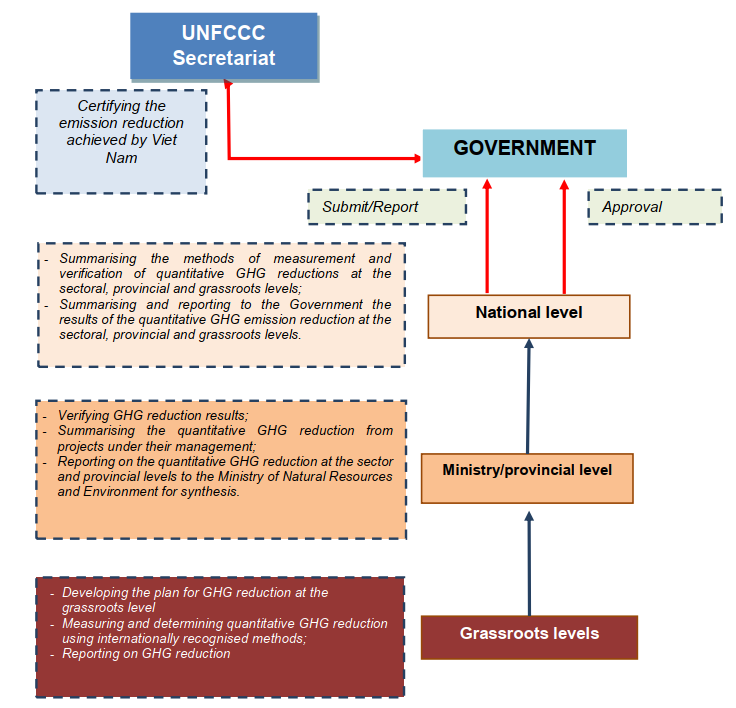
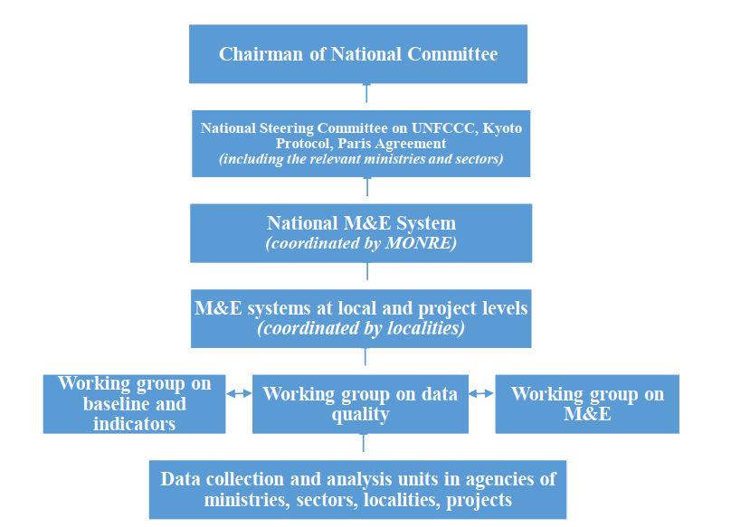
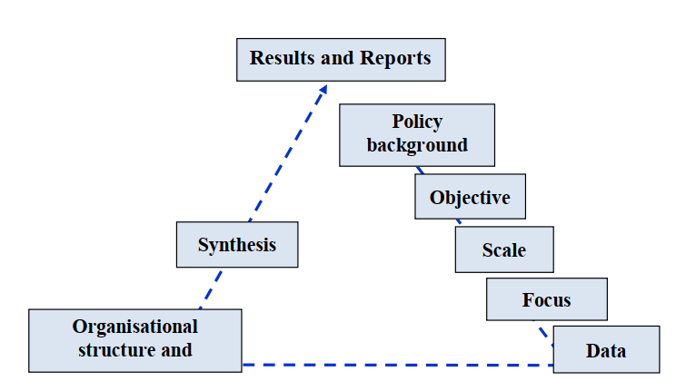

The Socialist Republic of Viet Nam
UPDATED NATIONALLY DETERMINED CONTRIBUTION (NDC)
Ha Noi, July 2020
ABBREVIATIONS
|
AF
|
Adaptation Fund
|
|
BAU
|
Business as usual
|
|
BTR
|
Biennial Transparency Report
|
|
BUR
|
Biennial Update Report
|
|
COP
|
Conference of the Parties
|
|
CPI
|
Consumer price index
|
|
FDI
|
Foreign direct investment
|
|
GCF
|
Green Climate Fund
|
|
GEF
|
Global Environment Facility
|
|
GHG
|
Greenhouse gas
|
|
INDC
|
Intended Nationally Determined Contribution
|
|
IP
|
Industrial Processes
|
|
LULUCF
|
Land use, land use change and forestry
|
|
M&E
|
Monitoring and Evaluation
|
|
MRV
|
Measurement, Reporting and Verification
|
|
NAP
|
National Adaptation Plan
|
|
NAMA
|
Nationally appropriate mitigation action
|
|
NC
|
National Communication
|
|
NCCC
|
National Committee on Climate Change
|
|
NDC
|
Nationally Determined Contribution
|
|
ODA
|
Official development assistance
|
|
PIPA
|
Plan for Implementation of the Paris Agreement
|
|
REDD+
|
Reducing Emissions from Deforestation and forest Degradation, plus the sustainable management of forests, and the conservation and enhancement of forest carbon stocks
|
|
RDF
|
Refuse derived fuel (from plastic and paper waste)
|
|
TOE
|
Ton of oil equivalent
|
|
UNFCCC
|
United Nations Framework Convention on Climate Change
|
I. INTRODUCTION
1.1 Overview
At the 21st Conference of the Parties (COP21) in 2015, the Parties to the United Nations Framework Convention on Climate Change (UNFCCC) adopted the Paris Agreement. This is a historic agreement, the first global legal framework binding the responsibilities of all Parties in joint efforts to combat climate change. The implementation of each Party's responsibilities for climate change response is primarily reflected through the Intended Nationally Determined Contribution (INDC).
Viet Nam's INDC comprises two components, namely mitigation and adaptation. The mitigation component identifies the roadmap for GHG reduction in the period 2021- 2030 for the following sectors: energy; agriculture; land use, land-use change and forestry (LULUCF); and waste. The business-as-usual (BAU) scenario was developed using 2010 as the base year, and provides projection for 2030. With domestic resources, by 2030 Viet Nam will have reduced GHG emissions by 8% compared to the BAU scenario. This contribution can increase by up to 25% with international support through bilateral and multilateral cooperation and the implementation of new mechanisms in the Paris Agreement. The adaptation component identifies the efforts that have been implemented; the institutional, policy, financial, human resource and technology gaps; and the prioritised adaptation actions for the period 2021-2030. Viet Nam submitted the INDC to the UNFCCC Secretariat in September 2015; signed and approved the Paris Agreement in April and October 2016, respectively; and issued the Plan for Implementation of the Paris Agreement (PIPA) in October 2016. After the Paris Agreement entered into force, the Parties’ INDCs became Nationally Determined Contributions (NDCs).
Since the submission of its NDC, Viet Nam has developed and issued several important policies on climate change response at the national level, such as the Resolution of the Politburo of the Central Committee of the Communist Party of Viet Nam on the orientation of Viet Nam’s National Energy Development Strategy to 2030, with a vision to 2045 (2020); Viet Nam’s Renewable Energy Development Strategy to 2030, with a vision to 2050 (2015); the Revised National Power Development Plan (PDP) for 2011- 2020 with a vision to 2030 (revised PDP VII) (2016); the PIPA (2016); the National Action Plan for Implementation of the 2030 Agenda for Sustainable Development (2017); the Target Programme for Climate Change Response and Green Growth for the period 2016-2020 (2017). Among the above-mentioned documents, the PIPA materialises Viet Nam’s international commitments on climate change response, including 68 groups of tasks to be implemented by 2030 on climate change mitigation and adaptation, resource mobilisation, enhancing and improving institutional frameworks, and establishing the enhanced transparency frameworks on responses and support received for responses to climate change. The content of Viet Nam’s NDC has been comprehensively reflected in its corresponding Plan, which identifies the tasks requiring the most ambitious and continuous efforts in line with national conditions and adjustments of Viet Nam’s commitments in implementation of the Paris Agreement, geared towards a low carbon and climate resilient economy.
In accordance with Decision 1/CP.21 of COP21, requesting Parties to communicate or update the NDC by 2020, Viet Nam reviewed and updated its NDC to be submitted to the UNFCCC Secretariat in 2020 based on the actual country context.
The review and update process has received active participation by scientists, ministries, agencies, non-governmental organisations, research institutes, enterprises, international organisations, and development partners. Many national, sectoral and thematic consultation workshops were organised to assess the feasibility, contents, and measures in implementing the updated NDC. Ministries and agencies actively participated in the review and update process. Research results and good experience in climate change response were reviewed and reflected in the updated NDC.
The mitigation component identifies measures for the period 2021-2030 in the following sectors: energy; agriculture; waste; land use, LULUCF; and the industrial processes (IP). The BAU scenario was developed using 2014 as the base year and provides projections for up to 2030.
The domestic mitigation measures in the updated NDC include: (i) improving energy- saving and energy efficiency, and reducing energy consumption; (ii) changing the fuel and energy structure in industry and transportation; (iii) shifting passenger and cargo transportation models; (iv) promoting efficient exploitation of renewable energy sources and increasing their proportion in energy production and consumption; (v) reducing GHG emissions through sustainable agricultural development, and improving the effectiveness and competitiveness of agricultural production; (vi) managing and developing sustainable forests, enhancing carbon sequestration and environmental services; conservation of biodiversity associated with economic development and increasing incomes for forest-dependent communities and people; (vii) managing wastes; (viii) reducing GHG emissions by replacing construction materials and improving the cement and chemical production processes together with reducing the consumption of HFCs.
Mitigation efforts will be assessed biennially based on the evaluation of measure implementation, and will be cross-checked through the biennial GHG inventory at both national and sectoral levels subject to unified regulations issued by competent authorities. The results of GHG reduction and the international support received for NDC implementation will be reflected in the National Communication (NC), the Biennial Update Report (BUR) and the Biennial Transparency Report (BTR) to the UNFCCC.
The adaptation component identifies strategic tasks in order to improve adaptive capacity, enhance resilience, and reduce risks caused by climate change, thus contributes to the achievement of the country’s sustainable development goals.
The identified strategic tasks are: (i) enhancing adaptation efficiency through strengthening state management and resources; (ii) increasing the resilience and adaptive capacity of communities, economic sectors and ecological systems; (iii) reducing disaster risks and minimizing damages, getting ready to cope with increased natural disasters and climate extremes due to climate change. These strategic tasks are consolidated in the National Adaptation Plan (NAP), and the National Action Plan on Climate Change. The NAP implementation results will be used as inputs for the review and evaluation of the NDC’s adaptation component.
Adaptation efforts will be evaluated biennially based on evaluating implementation of strategic tasks in the NDC and specific actions in the NAP. The results will be reflected in the Adaptation Communication and the BTR submitted by Viet Nam to the UNFCCC Secretariat.
Other contents: Viet Nam's updated NDC also includes details on: (i) the synergies and co-benefits between adaptation, mitigation and the achievement of the sustainable development goals; gender equality, and risk reduction for vulnerable groups such as poor and ethnic minority groups, the elderly, women, children, people with chronic diseases, people with disability etc.; (ii) impacts, advantages and challenges in implementing the NDC; (iii) plan for the implementation of the NDC; (iv) monitoring and evaluation of the NDC implementation.
1.2 Summary of updated contents compared to current NDC
1.2.1 General issues
In the updated version of the NDC, Viet Nam has:
-
Reviewed, updated and adjusted its mitigation and adaptation contributions to be more in line with the country’s current situation and latest socio-economic development forecasts for up to 2030; ensured that NDC implementation objectives are in line with the objectives of the Socio-Economic Development Strategy, the National Climate Change Strategy, the Viet Nam Green Growth Strategy, and the National Strategy for Natural Disaster Prevention, Response and Mitigation.
-
Followed several new requirements for the NDC adopted at COP24 that are suitable for Viet Nam’s capacities.
-
Clarified issue of loss and damage and included Viet Nam's latest efforts in adaptation and mitigation.
-
Included impact assessment of the implementation of mitigation measures on socio- economic development.
-
Added the analysis of co-benefits of adaptation, mitigation, and sustainable development.
-
Supplemented appropriate indicators to facilitate regular monitoring and evaluation of NDC implementation progress.
-
Included a national system for measurement, reporting and verification (MRV) for mitigation actions and a monitoring and evaluation (M&E) system for adaptation actions in order to implement the NDC.
-
Clarified advantages, disadvantages and an implementation plan for the NDC given current international and national contexts as well as the appropriate measures to be taken.
1.2.2 Mitigation
The updates in the mitigation component are as follows:
-
The IP sector has been included in GHG inventory, BAU scenario and mitigation measures. With total emissions of 38.6 million tonnes of CO2eq, 12.0% of the country’s total emissions in 2014, the IP sector is expected to emit 140.3 million tonnes of CO2eq, or 14.4% of the country’s total emissions, in 2030.
-
The base year is set at 2014, which is the year with the latest national GHG inventory results since Viet Nam approved the Paris Agreement (compared to the base year of 2010 in the current NDC); total GHG emissions in the base year 2014 were 284.0 million tonnes of CO2eq (compared with 246.8 million tonnes of CO2eq in 2010 in the current NDC).
-
The emissions under the BAU scenario are estimated to be 528.4 million tonnes of CO2eq in 2020, 726.2 million tonnes of CO2eq in 2025, and 927.9 million tonnes of CO2eq in 2030 (compared with 474.1 million tonnes of CO2eq and 787.4 million tonnes of CO2eq in 2020 and 2030, respectively, in the current NDC).
-
Specific mitigation measures have been identified for the energy, agriculture, LULUCF, waste, and IP sectors.
-
Viet Nam will have reduced its GHG emissions by 9% compared to the BAU scenario by 2030 with its own domestic resources. This contribution can be raised up to 27% with international support through bilateral as well as multilateral cooperation and the implementation of new mechanisms under the Paris Agreement.
1.2.3 Adaptation
The updates in the adaptation component include:
-
The identification of strategic tasks including enhancing adaptation efficiency through strengthening state management and resources; increasing resilience and the adaptive capacity of communities, economic sectors and ecological systems; reducing disaster risks and minimizing damages, getting ready to cope with increased natural disasters and weather extremes due to climate change.
-
Adaptation measures to minimise damages caused by future climate change impacts are specifically identified for each sector (including natural resources and environment, agriculture and rural development, public health, urban, housing, transport, tourism and hospitality, industry and trade), and for each region (the Red River Delta, Mekong River Delta, and coastal and mountainous regions).
II. MITIGATION COMPONENT
2.1 Viet Nam's efforts and achievements in mitigation
2.1.1 Policy framework supporting implementation of GHG reduction targets
Over the past years, Viet Nam have issued and adopted such mitigation-related policies as the Resolution of Viet Nam’s Central Committee of the Communist Party of Viet Nam on proactively responding to climate change, strengthening natural resources management and environmental protection (2013), the Conclusion of the Politburo on promoting active climate change response, strengthening natural resources management and environmental protection (2019), the Resolution of the Politburo of the Central Committee of the Communist Party of Viet Nam on the orientation for the National Energy Development Strategy to 2030 with a vision to 2045 (2020).
The mitigation-related legal documents include the Law on Energy Efficiency (2011), the Law on Water Resources (2012), the Law on Environmental Protection (2014) and the Forestry Law (2017).
The mitigation-related strategies are the Viet Nam Forestry Development Strategy 2006- 2020 (2007); the National Energy Development Strategy to 2020 with a vision to 2050 (2007), the National Strategy on Climate Change (2011); Viet Nam Green Growth Strategy (2012), the Viet Nam Transport Development Strategy to 2020 with a vision to 2030 (2013), and the Viet Nam Renewable Energy Development Strategy to 2030 with a vision to 2050 (2015).
The programmes, plans and schemes directly related to mitigation include the National Target Programme on Energy-saving and Energy Efficiency (2006), the Scheme on Development of Biofuel up to 2015 with a vision to 2025 (2007), the 2012-2020 National Action Plan on Climate Change (2012); the 2013-2020 National Plan on Urban Development of Viet Nam in Response to Climate Change (2013); the National System for GHG inventory (2015), the National Power Development Plan for the period 2011- 2020 with a vision to 2030 (2016), the Plan for Implementation of the Paris Agreement (2016); the Support Programme in response to Climate Change (SP-RCC); the 2011- 2015 National Target Programme to Respond to Climate Change, the 2016-2020 Target Programme on Climate Change Response and Green Growth for the (2017) and the 2011-2020 National Action Programme on Reduction of GHG Emissions through Efforts to Reduce Deforestation and Forest Degradation, Sustainable Management of Forest Resources, Conservation and Enhancement of Forest Carbon Stocks (2017).
2.1.2 Efforts to reduce GHG emissions in different sectors
In recent years, Viet Nam has implemented a significant number of actions to reduce GHG emissions in the energy, transportation, agriculture, LULUCF, and waste sectors and has achieved some successes. Moreover, strengthened education and communication on climate change and green behaviours have contributed to reducing greenhouse gas emissions at the community level.
In the energy sector, according to the statistics, measures on energy-saving and energy efficiency helped reduce by about 7.3 million tonnes CO2eq in 2014 compared to the previous BAU scenario. In 2014, electricity loss decreased by 1.55% (equivalent to about 2.2 billion kWh) compared to 2010, contributing to a reduction of 1.46 million tonnes of CO2eq. In the 2015-2019 period, electricity loss was cut by about 29.7 billion kWh compared to 2010 and helped reduce emissions by 26.5 million tonnes of CO2eq. Regarding renewable energy development, by the end of 2019, the total capacity of small-scale hydro-power had reached 3,674 MW, wind power 377 MW, biomass 325 MW, and solar power 4,696 MW.
In the transport sector, climate change responses have been mainstreamed into the process of updating, adjusting and developing sectoral strategies and planning, including detailed planning of seaport groups; development planning of Viet Nam’s dry port system; detailed planning of the dry port system to 2020 with orientation to 2030; the master plan for inland waterway transport development; railway transport development strategy and planning; and the planning of Long Thanh Airport and other airports. The use of renewable energy in public lighting and traffic light systems has also increased.
In the agriculture sector, actions on GHG reductions have been implemented: replacing long-duration rice varieties with short-duration ones, helping reduce typhoon-related risks and GHG emissions time; increasing areas with mid-season water drainage and alternating wet and dry irrigation techniques; increasing areas with integrated crop management (ICM) or areas with the “3 decrease 3 increase (3G3T)” and “1 must 5 decrease (1P5G)” techniques applied; converting inefficient rice growing models to the rice - shrimp model and converting the rice - rice model to the upland crop model; reducing the rate of field burning of rice straw from 90% to less than 30%; improving diets for tens of thousands of milk cows; collecting and treating millions tonnes of organic waste in livestock production to make organic fertilisers; applying water saving irrigation techniques on hundreds of hectares of coffee.
In the LULUCF sector, Viet Nam has actively implemented mitigation measures, especially under the REDD+ Programme. In the period 2015-2020, REDD+ programmes and projects have been focusing on improving institutional frameworks and policies, capacity building, developing technical guidelines (reference emission level for REDD+, MRV, benefit sharing mechanism, etc.) and investing in the implementation of REDD+ activities. Several REDD+ programmes have calculated the potential of GHG reduction and enhancement of forest carbon stock under specific REDD+ activities. The emission reduction programme in North Central Viet Nam is expected to cut 25 million tonnes of CO2eq in the 2018-2025 period. National forest coverage has also been on the rise, reaching 41.89% by the end of 2019.
In the waste sector, many solid waste treatment plants have been built and put into operation with new and advanced technologies combined with compost production, contributing to reducing landfill amounts and limiting environmental impacts.
Although significant efforts have been made in implementing mitigation actions, there are still difficulties and challenges in certain areas such as improving the national system of GHG inventory; establishing an MRV system at all levels; developing and implementing Nationally Appropriate Mitigation Actions (NAMAs); applying GHG reduction technologies, especially in the agriculture sector; accessing domestic and foreign financial sources for mitigation activities; and strengthening enterprises’ proactivity in implementing mitigation initiatives.
2.2 BAU Scenario
The base year is 2014, which is the year with the latest GHG inventory results since Viet Nam approved the Paris Agreement. The sources/sink of GHG emissions are identified for the energy, agriculture, LULUCF, waste, and IP sectors. The total GHG emissions in the base year 2014 were 284.0 million tonnes of CO2eq. Although the base year of 2014 is used, it should be noted that in the period 2010-2014, Viet Nam reduced emissions by 10.5 million tonnes of CO2eq by implementing a series of energy-saving and energy efficiency measures, encouraging and supporting the development of renewable energy sources, and applying measures to reduce loss in power transmission and distribution.
The BAU scenario was developed based on the medium economic development scenario, energy demand, GDP growth by sector, GDP structure by sector, population growth, forest and forest land planning, and the quantity of livestock and arable land for the period 2020-2030. Guidelines such as the Revised 1996 IPCC Guidelines for National Greenhouse Gases Inventories and the 2000 IPCC Good Practice Guidance have been used to calculate and forecast GHG emissions to 2020 and to 2030. Regarding GHG emissions and removal under the LULUCF sector, the IPCC Good Practice Guidance for the LULUCF sector in 2003 has been used to calculate and forecast GHG emissions/removals to 2020 and to 2030.
Table 1. GHG Inventory in 2014 and BAU Scenario to 2030
Unit: Mil. tCO2eq
| 2014 |
171.6 |
89.8 |
-37.5 |
21.5 |
38.6 |
284.0 |
| 2020 |
347.5 |
104.5 |
-35.4 |
31.3 |
80.5 |
528.4 |
| 2025 |
500.7 |
109.2 |
-37.9 |
38.1 |
116.1 |
726.2 |
| 2030 |
678.4 |
112.1 |
-49.2 |
46.3 |
140.3 |
927.9 |

2.3 Mitigation contributions
The national mitigation measures for the 2021-2030 period have been identified for the energy, agriculture, LULUCF, waste, and IP sectors. The mitigation contributions are calculated for two cases: with domestic resources only and with international support through bilateral, multilateral cooperation and implementation of new mechanisms under the Paris Agreement.
Criteria for selecting mitigation measures include: (i) costs/benefits; (ii) feasibility in implementation; (iii) synergies and co-benefits with adaptation, and socio-economic development; (iv) compliance with national and sectoral development plans for the 2021-2030 period.
With domestic resources, by 2030, Viet Nam will have reduced total GHG emissions by about 9% compared to the BAU scenario, equivalent to 83.9 million tonnes CO2eq. In particular, the energy sector is expected to reduce 51.5 million tonnes of CO2eq, about 5.5% compared to the BAU scenario; the agriculture sector, 6.8 million tonnes of CO2eq, or 0.7% compared to the BAU scenario; the LULUCF sector, 9.3 million tonnes of CO2eq, approximately 1.0% compared to the BAU scenario; the waste sector, 9.1 million tonnes of CO2eq, about 1.0% of the BAU scenario; and the IP sector, 7.2 million tonnes of CO2eq, about 0.8% of to the BAU scenario (see Table 3). The GHG reductions have been estimated for each sector. However, during the process of implementing the updated NDC, adjustments will be made to estimates to ensure that they are in line with actual situation and that the national contribution objectives are met.
The above-mentioned 9% contribution can be increased by up to 27% compared to the BAU scenario (equivalent to 250.8 million tonnes of CO2eq) with international support received through bilateral, multilateral cooperation as well as through the implementation of new mechanisms under the Paris Agreement. In particular, expected GHG reduction in the energy sector will be 155.8 million tonnes of CO2eq, about 16.7% compared to the BAU scenario; in the agriculture sector, 32.6 million tonnes of CO2eq, or 3.5% compared to the BAU scenario; in the LULUCF sector, 21.2 million tonnes of CO2eq, about 2.3% compared to the BAU scenario; in the waste sector, 33.2 million tonnes of CO2eq, approximately 3.6% compared to the BAU scenario; and in the IP sector, 8.0 million tonnes of CO2eq, or 0.9% compared to the BAU scenario (see Table 3).
Table 2. Reduction contributions
|
Coverage
|
Covering the entire economy, consisting of following sectors:
-
Energy: (Emissions from fuel combustion)
-
Energy industry;
-
Industrial production and construction;
-
Transportation; and
-
Others: household appliances, agriculture and commercial services.
-
Agriculture
-
Rumen digestion,
-
Organic fertiliser management, and
-
Rice cultivation.
-
LULUCF
-
Forest land;
-
Cultivation land;
-
Grassland;
-
Wetland; and
-
Others.
-
Waste
-
Landfills; and
-
Material production from solid waste.
-
Industrial processes (IP)
-
Construction materials;
-
Chemical industry; and
-
HFCs consumption.
|
|
Type of contribution
|
GHG reduction compared to the BAU scenario.
|
|
Greenhouse gases
|
Carbon dioxide (CO2), Methane (CH4), Nitrous oxide (N2O), Halocarbons (HFCs).
|
|
Period
|
From 01/01/2021 to 31/12/2030.
|
|
Methodology to estimate GHG emissions and data
|
-
IPCC guidelines; and
-
National statistics, national socio-economic development plan and sectoral activity data.
|
|
Metric applied
|
100-year GWP values in the Fourth IPCC Assessment Report (2007):
-
CO2 = 1
-
CH4 = 25
- N2O = 298
- HFCs = 124 - 14,800
|
|
BAU Scenario
|
The BAU scenario was developed based on the assumption of economic growth in the absence of climate change response policies. The BAU scenario starts from 2014 (the year of latest national GHG inventory) and includes the energy, agriculture, LULUCF, waste, and IP sectors.
-
GHG inventory in 2014: 284.0 million tonnes of CO2eq
-
Projections for 2020 and 2030:
-
In 2020: 528.4 million tonnes of CO2eq;
-
In 2025: 726.2 million tonnes of CO2eq; and
-
In 2030: 927.9 million tonnes of CO2eq
|
|
Unconditional contribution (with domestic resources)
|
With domestic resources, by 2025 Viet Nam will have reduced total GHG emissions by about 7.3% compared to the BAU scenario (equivalent to 52.9 million tonnes of CO2eq), and by 2030 Viet Nam will have reduced total GHG emissions by about 9% compared to the BAU scenario
(equivalent to 83.9 million tonnes of CO2eq).
|
|
Conditional contribution (with international support)
|
The above-mentioned 9% contribution can be increased to 27% by 2030 (equivalent to 250.8 million tonnes of CO2eq) with international support received through bilateral, multilateral cooperation as well as through the implementation of market and non-market mechanisms under Article 6 of the Paris Agreement, in line with the socio-economic conditions and international conventions to which Viet Nam is signatory.
|
Compared to the current NDC, GHG reductions in the updated NDC in the case of unconditional contribution are increased in both amount as well as ratio compared to BAU by 2030. More specifically, the reductions are increased by 21.2 million tonnes of CO2eq (from 62.7 million tonnes in the current NDC to 83.9 million tonnes in the updated NDC), or by 1% in percentage terms (from 8% in the current NDC to 9% in the updated NDC). With international support, the contribution is increased from 25% to 27%, increasing the reduction amount by 52.6 million tonnes of CO2eq (from 198.2 million tonnes in the current NDC to 250.8 million tonnes in the updated NDC).
Table 3. Reduction contribution by sectors
|
Sector
|
Contribution with domestic resources
|
Contribution with international support
|
Total contribution with both domestic resources and international support
|
|
Compared to BAU scenario (%)
|
Reduction amount (Mil. tonnes of CO2eq)
|
Compared to BAU scenario (%)
|
Reduction amount (Mil. tonnes of CO2eq)
|
Compared to BAU scenario (%)
|
Reduction amount (Mil. tonnes of CO2eq)
|
|
Energy
|
5.5 |
51.5 |
11.2 |
104.3 |
16.7 |
155.8 |
|
Agriculture
|
0.7 |
6.8 |
2.8 |
25.8 |
3.5 |
32.6 |
|
LULUCF*
|
1.0 |
9.3 |
1.3 |
11.9 |
2.3 |
21.2 |
|
Waste
|
1.0 |
9.1 |
2.6 |
24.0 |
3.6 |
33.1 |
|
IP
|
0.8 |
7.2 |
0.1 |
0.8 |
0.9 |
8.0 |
|
Total
|
9.0 |
83.9 |
18.0 |
166.8 |
27.0 |
250.8 |
Note (*): increase in GHGs sequestration
2.4 Measures to achieve GHG reductions in different sectors
2.4.1 Energy
-
Undertaking investment, production and business projects on energy-saving and energy efficiency in production, manufacturing, renovation and conversion of markets for vehicles, equipment, machinery, production lines, public lighting, and energy-saving in public premises, schools, hospitals and commune health centres, households and others;
-
Using energy efficient household appliances, and industries and commerce electrical equipment;
-
Applying energy efficiency measures in industries;
-
Developing renewable energy in accordance with Viet Nam's potential, advantages and conditions;
-
Applying energy efficiency measures in transport;
-
Changing freight transportation models; restructuring the transportation market;
-
Shifting from private to public means of transport;
-
Shifting from conventional fuels to biofuel, natural gas and electricity;
-
Improving the energy efficiency of transport vehicles;
-
Improving, developing and applying technology in manufacturing construction materials;
-
Reducing clinker content and implementing other measures to reduce GHG emissions in cement production; and
-
Developing and using energy-saving construction materials and green materials in housing and commercial sectors.
2.4.2 Agriculture
-
Applying management and technology solutions in cultivation and husbandry; improving diets for animals; shifting crop production structures; changing land-use methods; and
-
Applying technology to treat and reuse by-products and waste in agriculture and livestock production; developing organic agriculture.
2.4.3 LULUCF
-
Protecting, conserving and sustainably using forests and forest land to increase carbon sequestration and forest certification;
-
Planting and developing forests, prioritising production forests, large timber forests and coastal forests; restoring protection forests and special-use forests;
-
Defining areas for restoring natural forests, promoting forest regeneration and enrichment planting in areas planned for forestry; improving forest carbon stock quality and volume; and
-
Developing agroforestry models to enhance carbon stocks and conserve land.
2.4.4 Waste
2.4.5 Industrial processes (IP)
-
Implementing measures for grinding blast furnace slag, fly ash, pozzolana and limestone to replace clinker in cement production; and
-
Reducing the consumption of HFCs.
III. ADAPTATION COMPONENT
3.1 Climate change in Viet Nam
3.3.1 Climate change in Viet Nam through monitoring data
In recent years, climate change in Viet Nam has maintained the trends identified in the current NDC. Climate extremes continue to be recorded with higher intensity and frequency. Monitoring data over the past 60 years (1958-2018) shows that the annual average temperature of the whole country rose by about 0.89oC; rainfall decreased in the Northern regions from 1% to 7% while increased in the Southern regions from 6% to 21%; the number of strong typhoons was on the rise; the daily maximum and minimum temperatures increased; the number of hot days rose in most areas; droughts in the dry season occurred more frequently across the country; the number of cold and freezing cold days decreased; extreme rain increased; and average sea levels at coastal and island monitoring stations increased by 2.74 mm/year, particularly 3.0 mm/year during 1993 - 2018.
3.1.2 Projections of climate change in Viet Nam toward 2100
-
Temperature: The annual average temperatures in all regions would increase compared to the base period of 1986-2005. Under the medium scenario, temperatures would rise by 1.9-2.4oC in the North and 1.7-1.9oC in the South. Under the high scenario, temperatures rise by 3.3-4.0oC in the North and 3.0-3.5oC in the South. Extreme temperatures are likely to show a clear increase.
-
Rainfall: Under the medium scenario, annual rainfall would generally increase by 5- 15%. Under the high scenario, the maximum rainfall increase could reach over 20% in most of the North, the mid-Central, parts of the South and the Central Highlands. The average one-day maximum rainfall rises across the country (10-70%) compared to the base period.
-
Extreme events: The number of strong to very strong typhoons would increase. The summer monsoon would start earlier and end later. The number of severely cold days in Northern provinces would fall. The number of hot days would increase, especially in the North Central, South Central and Southern regions. Droughts would be more severe due to rising temperatures and decreasing rainfall during the dry season.
-
Sea level rise: Under the high scenario, at the end of the century, the highest sea level rise would occur on the Paracel Islands and the Spratly Islands: 78cm (52-107cm) and 77cm (50-107cm) respectively; Ca Mau - Kien Giang area: 75cm (52-106cm); and Mong Cai - Hon Dau and Hon Dau - Deo Ngang areas: 72cm (49-101cm).
-
Inundation risks due to sea level rise: If the sea level rises by 100 cm, risks of permanent inundation for areas are as follows: Red River Delta (16.8%), Quang Ninh (4.79%), Central coastal provinces from Thanh Hoa to Binh Thuan (1.47%), Ho Chi Minh City (17.8%); Ba Ria - Vung Tau (4.79%), and the Mekong River Delta (38.9%); Van Don, Con Dao and Phu Quoc islands are at high risk of inundation; the Paracel Islands are at a higher inundation risk than the Spratly Islands, especially those belonging to the Luoi Liem and Tri Ton group of islands.
3.1.3 Increased climate-induced risks
Viet Nam is one of the countries most affected by climate change. Increased exposure to hazards is the major cause of increased long-term damage due to weather- and climate-related disasters. The level of vulnerability to climate change varies across regions, depending on geographical and socio-economic conditions of each region. The exposure of the Central Coastal and Mekong River Delta regions to climate change impacts is high, while their sensitivity to climate change is moderate. The exposure of the Northern mountainous region is not high. Nevertheless, their high percentage of poor households leads to a high degree of sensitivity to climate change. Related sectors, regions, communities and infrastructure will face increased risks and potential impacts of climate change as follows:
-
Coastal areas and islands suffer from increased risks and potential impacts of climate change and sea level rise. Risks will increase in deltas and large urban areas, especially coastal cities with high population densities, and with natural disasters and climate change risks not taken into account in urban and spatial planning. Assets, infrastructure and communities in these areas are likely to be extremely vulnerable.
-
The Northern mountainous and Central regions become more susceptible to flash floods and landslides when rainfall patterns change as well as when frequency and intensity of heavy rain are on the rise.
-
Such areas as the Central Coastal and Central Southern regions, the Red River Delta and the Central Highlands have higher risks and vulnerability due to droughts and water shortages that can lead to desertification.
-
The poor, ethnic minority groups, people whose livelihoods depend on the climate, the elderly, women, children, and people with chronic illnesses have the highest level of vulnerability. Women, especially ethnic minority women, are highly vulnerable due to a limited access to education and fewer opportunities to participate in non-farm employment.
-
The fields of agriculture, natural ecosystems, biodiversity, water resources, sanitation, nutrition, public health, education, residential areas and physical infrastructure have high risks due to their high exposure and sensitivity to natural disasters and climate extremes.
3.1.4 Impacts of climate change on sectors and regions
-
Water resources: Monitoring data in recent years show that water flows at hydrological stations in major main river basins are below the average for several years. In many places, water levels have reached historic lows, causing water shortages for agricultural production and for people’s daily use. It is also causing deeper saline intrusion into estuaries. Under climate change scenarios, in most river basins, flows during flood season tend to increase, high and extreme floods occur with higher frequency and severity. Water flows in the dry season decrease, droughts and water shortages happen more frequently, and saline intrusion extends further into the mainland.
-
Agriculture and rural development: Climate change causes changes in the living conditions of species, leading to the extinction of some species while likely giving rise to new strains, pests and diseases vice versa; affecting the growth of cattle and poultry. Sea level rise would lead to losses or reduction of agricultural land and also further increase the risk of saline intrusion, causing a reduction of arable land. It would also affect aquaculture, food security and safety, and considerably affect forest ecosystems and forestry, as well as the productivity and viability of planted forests. Sea level rise also affects the mangrove forest ecosystem.
-
Transportation: The roadways sector is heavily affected by climate change, followed by railways and inland waterways. Increased rainfall would put 8.8% of the total railway network length at high risk of washout, mainly located on the North-South and Central region railway lines. If the sea level rises by 100 cm, over 4% of the railway system, 9% of the national highway system and about 12% of the provincial roadway system would be affected.
-
Urban development and housing: Sea level rise causes the inundation of metropolises such as Ho Chi Minh City as well as cities in the Mekong River Delta and along the Central Coastal regions. It would lead to the overflow of urban drainage systems in particular, which would increase the risk of diseases and epidemics. In many areas, houses are not safe enough to withstand increased natural disasters due to climate change. Municipalities in the Northern mountainous and hilly region and the Central region are often affected by extremely heavy rain and post-storm circulation, which cause floods, flash floods and landslides. Climate change also impacts water sources and the water supply system, including head works and water supply networks, and limits people’s access to clean water. Droughts and floods also affect the urban water supply system while these systems’ adaptive capacity to climate change impacts is only at the medium or low level.
-
Tourism: Climate change provides direct impacts on tourism resources, infrastructure and travel activities. Tourism service facilities are damaged or degraded under the impact of typhoons and floods. Typhoons, rain, wind, strong sunlight or rising temperatures could quickly degrade and damage building materials, affecting transport systems, lodging facilities, and amusement centres. Climate change also indirectly affects tourism activities through its effects on other sectors, such as transport, energy, water management, land-use for tourism services, etc.
-
Public health, gender equality and child protection:
-
Public health: Increased temperatures, hot and prolonged heat waves, air pollution, as well as other climate extremes negatively affect human health, leading to increased vulnerability especially among the elderly, women, children and people with such chronic diseases as cardiovascular, neurological, musculoskeletal, respiratory and allergic conditions. According to statistics, an average temperature rises by 1°C results in a 3.8% increase of hospitalisation rate for children aged under 5 due to respiratory infections. Climate change facilitates the development of vector-borne diseases, increasing the likelihood of outbreaks and spread of such diseases as influenza A (H1N1, H5N1, H7N9), diarrhoea, cholera, dysentery, malaria, dengue fever, yellow fever, typhoid, viral encephalitis, Japanese encephalitis, severe acute respiratory syndrome (SARS), plague, and zika.
-
Gender equality: Climate change, increased natural disasters and climate extremes produce different impacts on women and men. While men are exposed to more risks due to their involvement in search and rescue operations, women are generally more vulnerable to health and socio-economic problems.
-
Several negative impacts of climate change on women’s health include increased prevalence of diseases and epidemics, especially among pregnant women, girls, women with chronic diseases and elderly women. Regarding the socio-economic aspect, as female farmers usually have lower levels of education and less access to information and finance than men, their livelihoods depend mainly on natural resources and have high sensitivity but low adaptive capacity in the context of climate change. This is problematic especially in cases where females are heads of households. In addition, women in farming households usually have limited decision- making power compared to men. They, therefore, may not be able to apply their experience and understanding in selecting varieties and cultivation techniques suitable for the climate change context in agricultural production.
-
Child protection: Climate change and natural disasters have direct negative impact on health of children, families and communities; increase problems and risks in child protection; negatively affect livelihoods of families, which force parents to leave their hometown to work in cities in many cases. As a result, many children may not receive proper care. In addition, family livelihood pressure increases the risk of domestic violence and violence towards children. Finally, in poor families, female-headed households, and households with children with disabilities and/or fatal diseases, negative impacts of climate change may force children to drop out of school in order to work to support their parents financially. Climate change may also lead to a higher risk of early marriage as a means of reducing economic burdens for families.
-
Trade: Climate change can affect commercial infrastructure through local flooding, for example, impacting the storage and circulation of goods. Sea level rise will affect seaports, river ports and trade and logistics centres in coastal areas. Different climate change responses in different countries could also affect global, regional and domestic trade.
-
Energy: Increased temperatures lead to an increase in energy demand due to the use of cooling equipment. The demand for primary energy by 2030 is forecasted to have increased by about 391.7 thousand TOE, or about 0.17% of the total demand for primary energy in 2030. Increased rainfall can increase the production of hydropower plants and the storage of water in reservoirs. Unusual rainfall and water flows also affect supply and production plans of hydropower plants; cause losses and damage to electricity supply infrastructure and increase the cost of investment, renovation, repairs and upgrades of electricity distribution equipment and networks... Sea level rise may negatively affect power plants, power transmission systems, transformer stations, fuel pipeline systems, mines, coal yards and other energy facilities in coastal areas.
-
Industry: Rising temperatures lead to increases in energy consumption in industries and costs of ventilation and cooling for mines; and reduce the efficiency and output of power plants. Rain, typhoons and sea level rise negatively affect power operation, transmission and distribution systems, oil drilling platforms, oil and gas pipelines to the mainland, the supply of oil to cargo ships; and increase maintenance and repair costs of energy facilities, which in return affects the energy supply and consumption. Sea level rise will increase risks of flooding in industrial zones. If the sea level rises by about 100 cm, most coastal industrial zones will suffer from inundation of between 10% and 67% of their total areas.
-
Delta areas: If the sea level rises by 100cm, nearly 38.9% of the Mekong River Delta will be inundated, affecting about 10% of the delta population due to land loss and significant reduction of rice cultivation areas. Areas heavily affected by sea level rise are concentrated in such provinces as Ca Mau, Bac Lieu, Soc Trang, Hau Giang and Kien Giang. Increased saline intrusion in combination with impacts of droughts has seriously affected the supply of fresh water and reduced water quality. If the sea level rises by 100 cm, about 3% of the Red River Delta area will likely be submerged, of which 1.4% will be rice cultivation area, 0.6% residential area, 0.2% salt pond area and 0.8% other types of soil; many provinces in the region will lose land due to serious flooding: Thai Binh may lose 31.2% of its land, while Nam Dinh 24% and Hai Phong 17.4%, etc. Rice productivity could be reduced by 8% to 15% in 2030 and up to 30% in 2050. These outcomes are accompanied by many threats, such as lack of water for domestic use, saline intrusion, negative effects on the aquaculture and fishing environments, increased crop diseases, degradation of soil, and the loss of biodiversity and rare genetic resources.
-
Coastal areas: Coastal areas of Viet Nam are severely affected by sea level rise and frequently impacted by such climate-related hazards as typhoons and tropical depressions, floods and landslides. Climate change also exacerbates land degradation and increases saline areas, thereby significantly reducing rice production and causing many other environmental consequences. Besides, it reduces coastal biodiversity and changes low-lying ecosystems in and along rivers and estuaries due to changes in rainfall, surface water and groundwater, as well as the characteristics of water quality and nutrients; many low-lying areas in the coastal delta are at risk of inundation, reducing the area of forests and natural vegetation.
-
Mountainous areas: Temperature increase in the North-east, North-west and North Central regions will affect agriculture, biodiversity, energy production and consumption, and public health. Flooding in the Northwestern and Northeastern mountainous regions, the North Central and the Central Highlands will impact agriculture, water resources, transportation, people’s health and safety and residential areas. The strongly affected groups are mainly people in mountainous areas, especially ethnic minorities and the elderly, women and children. Floods and storms also cause serious damage to infrastructure, including rural infrastructure, flood and storm control infrastructure as well as irrigation facilities. Under the impact of climate change, the intensity of flash floods tends to increase, causing greater impacts on people’s lives in areas with more frequent flash floods.
3.1.5 Loss and damage
Viet Nam is facing loss and damage from climate change which are beyond the country’s ability to cope with even when climate change adaptation and mitigation measures are effectively applied. According to the climate change scenario (2016) and assessments, the increasing trend of loss and damage is inevitable.
In the 1995-2017 period, damage caused by natural disasters in Viet Nam was about VND 14 trillion per year (approximately USD 990 million, at 2010 values) with an increase of 12.7% per year. The number of typhoons reached a record high in 2017 (16 typhoons and 4 tropical depressions) with 386 people dead or missing. Total losses were estimated at VND 38.7 trillion (approximately USD 2.7 billion) with the majority coming from rice production (an average of 66.1% annually in the 2011-2016 period) and other crops. In the most affected areas, crop yields reduced by more than 50%.
Since the end of 2014, increased temperatures due to the impact of El Nino combined with reduced rainfall have caused droughts and saline intrusion, seriously damaging production activities and people's lives. The worst affected areas include the Central Southern region, the Central Highlands and the Mekong River Delta. Prolonged droughts and saline intrusion caused shortages of domestic water supplies for around 2 million people; the loss of livelihoods for 1.75 million people; the risk of water-borne diseases for 400,000 people; malnutrition for 27,500 children and 39,000 women; and damage to 18,335 ha of crops, 55,651 ha of fruit trees, 104,106 ha of industrial plants, and 4,641 ha of aquaculture area. The total damage was estimated at VND 5,572 billion.
By 2050, a loss of about 2% of GDP has been projected with the sea level rises by 18- 38 cm. By 2100, if the sea level rises by 100 cm, 6.3% of Viet Nam's land area will be submerged, of which about 570,000 ha is rice paddy in the Mekong River Delta causing an estimated loss of more than 3,177,000 tonnes of rice, equivalent to VND 17,500 billion (at 2016 prices); 4% of the railway system, 9% of the national highway system and 12% of the provincial roadway system will be affected, of which the transportation system in the Mekong River Delta will suffer the most (about 28% for national roadways and 27% for provincial roadways). The losses and damage due to sea level rise in the Mekong River Delta is estimated to be significant even with suitable adaptation measures implemented.
Agriculture is the most affected sector: the sector’s growth rate may decrease by 5-15% in 2030 and by 5.8-13.5% in 2050. Even for the service sector, the growth rate may be relatively low at only 0.1-0.8% in 2030 and can be as low as 0.1-0.3% in 2050. Losses and damage caused by sea level rise in the agricultural sector could reach nearly USD 43 billion from 2020 to 2100. Damage in the rice production sector accounts for 46% of the total losses, and for some provinces, including Thai Binh, Dong Thap, An Giang, Kien Giang and Can Tho city, this number could reach 70%.
In addition to the already identified economic losses, Viet Nam is also at a high risk of non-economic losses, which include negative impacts on people’s health as well as other consequences due to the relocation of many communities and economic zones. Non- economic losses also include loss of land due to erosion, loss of cultural heritage and local knowledge, and loss of biodiversity and ecosystem services. Although it is difficult to quantify non-economic losses, they are likely to be higher than economic losses.
3.2 Viet Nam's efforts and achievements in climate change adaptation
3.2.1 Adaptation policies
Viet Nam has issued and implemented many policies in its efforts to respond to climate change and implement international commitments, specifically:
-
The Resolution of Viet Nam’s Central Committee of the Communist Party of Viet Nam on proactively responding to climate change, strengthening natural resources management and environmental protection (2013); the Conclusion of the Politburo on promoting active climate change response, strengthening natural resources management and environmental protection (2019); the Resolution No.134/2016/QH13 dated April 19, 2016 of the National Assembly on adjusting the national land-use master plan to 2020 and the land-use plan for the final period (2016-2020); the Resolution No.36- NQ/TW dated October 22, 2018 of the Conference No.8 of the Communist Party’s Central Committee, Legislature XII on the Strategy for sustainable development of Viet Nam's marine economy until 2030 with a vision to 2045 (2018); Resolution No.76/NQ- CP on natural disaster prevention and control (2018).
-
The Land Law (2013), the Law on Environmental Protection (2014), the Law on Hydro- Meteorology (2015), the Law on Irrigation (2017); the Forestry Law (2017); the Law on Fisheries (2017), the Law on Crop Production (2018), the Law on Animal Husbandry (2018), the Biodiversity Law (2018), the Law on Natural Disaster Prevention and Control (2013), the Law on Water Resources (2014) and the Law on Marine and Island Resources and Environment No.82/2015/QH13 (2018). Currently, the Law on Environmental Protection, the Law on Natural Disaster Prevention and Control and the Law on Dikes are being revised for submission to the National Assembly for approval in 2020.
-
The 2011-2015 National Target Programme to Respond to Climate Change, the National Strategy for Viet Nam’s Renewable Energy to 2030 with a vision to 2050 (2015), the SPRCC, the 2016-2020 Target Programme for Climate Change Response and Green Growth (2017), the National Action Programme REDD+ to 2030 (2017), the National Action Plan for the Implementation of 2030 Agenda for Sustainable Development (2017), the 2016-2020 Science and Technology Programme for Climate Change Response, Natural Resources and Environmental Management (2016), the 2016-2020 Science and Technology Programme for Natural Disaster Prevention and Control and Environmental Protection (2018), and the Overall Programme for Sustainable and Climate-Resilient Agriculture Development of the Mekong River Delta to 2030 with a Vision to 2045 (2020).
-
The PIPA (2016), the Action Plan in response to climate change in agriculture and rural development for the 2016-2020 period with a vision to 2050 (2016), the Viet Nam urban green growth development plan to 2030 (2018), the Decree No.119/2016/ND-CP of the Government issuing several policies on the management, protection and sustainable development of coastal forests to respond to climate change, the Government’s Resolution No.120 on sustainable and climate-resilient development of the Mekong Delta (2017), the Scheme on urban development in Viet Nam to respond to climate change to 2020 (2013), the Master Plan for the national natural resources and environment monitoring network (2016) and the Decision No.417/QD-TTg of the Prime Minister issuing the Overall Action Programme for the implementation of Resolution No.120/NQ-CP of the Government on sustainable and climate-resilient development of the Mekong Delta.
Ministries, sectors, provinces and cities have issued a number of sectoral, local policies and plans such as climate change action plans; green growth action plans; plans for implementation of the Paris Agreement; integrating climate change in sectoral development strategies, planning and plans.
3.2.2 Adaptation efforts
Viet Nam has been striving to implement adaptation actions, some of which include:
-
Strengthening research and monitoring capacity for climate change; improving natural disaster forecast and warning capacity; updating climate change and sea level rise scenarios; consolidating and renovating the hydro-meteorological observation network towards integration and automation; strengthening forecast and warning capacity for diseases under climate change conditions;
-
Consolidating rural and irrigation infrastructure, developing and expanding clean water supply systems in rural areas; conducting natural disaster prevention and control in rural areas; supporting residents in areas that are prone to floods and landslides; formulating plans to relocate and resettle residents in areas frequently hit by floods and typhoons and areas prone to flash floods and landslides; adjusting production plans and infrastructure to adapt to and limit the negative impacts of climate change;
-
Developing and implementing the national water resources master plan and river basin integrated master plan, taking into account climate change; developing and implementing measures for ensuring water security in the context of climate change and continuing to enhance the implementation of the above-mentioned ongoing measures;
-
Shifting production towards climate-smart and environmentally friendly production; changing the production structure and varieties of plants and animals, adjusting cultivation calendars, agricultural production techniques towards climate-resilience; implementing the programme for aquatic resources protection and development,diversifying cultured species, applying technological measures and cultivation practices of sustainable and organic aquaculture;
-
Implementing the target programme for sustainable forestry development for the 2016- 2020 period; conserving and enhancing forest carbon stocks; protecting, restoring and planting mangrove and coastal protection forests aiming to exceed over 30% of the plan to 2020;
-
Implementing the master plan for irrigation for the 2012-2020 period, with a vision to 2050, under the context of climate change in the Mekong River Delta, Red River Delta and Central Region; implementing the national action plan to combat desertification;
-
Proactively undertaking natural disaster prevention, control and mitigation, focusing on areas vulnerable to natural disasters; improving the capacity of search, rescue and disease prevention; implementing flood prevention planning in the Day and Hong-Thai Binh River systems; protecting flood drainage spaces in the basins of the Red -Thai Binh River, Mekong, Cau, Nhue-Day, Dong Nai, and Saigon Rivers and other major rivers; constructing drainage works;
-
Implementing the program to ensure safety and improve the efficiency of reservoir exploitation; repairing and improving dam safety for 34 provinces in the North, Central Coastal regions and Central Highlands; building new large reservoirs in the provinces of the Central Northern, Central Southern Coastal regions and Central Highlands; building new small reservoirs and spillway clusters in the Northern mountainous regions; repairing and upgrading irrigation systems in the Red River Delta; completing and finalising the irrigation systems, expanding flood drainage canals and regulating sewers in the Mekong River Delta; continuing the investment programme to consolidate, protect and upgrade sea dikes from Quang Ninh to Quang Nam and from Quang Ngai to Kien Giang provinces;
-
Promoting measures to prevent and mitigate impacts of high tides, inundation, and saline intrusion due to sea level rise; building flood risk maps based on sea level rise scenarios at the commune level; implementing flood prevention schemes for Ho Chi Minh City, Can Tho, Ca Mau and other coastal cities, especially in the Mekong River Delta;
-
Implementing the Scheme on Viet Nam urban development to respond to climate change for the 2013-2020 period to proactively respond to climate change, improve, upgrade and develop urban areas; deploying the model of typhoon and flood resistant houses;
-
Proposing and implementing research, assessing impacts and developing climate change responses and sea level rise measures for different sectors; conducting research on climate change adaptation models; applying climate change response technologies to different sectors; and
-
Enhancing knowledge dissemination, improving adaptive capacity, ensuring livelihoods for people in areas at seriously high risk of climate change impacts as well as in areas frequently affected by natural disasters; raising community awareness and enhancing community-based disaster risk management; raising awareness and building sustainable management models for mangrove forests for coastal protection; raising awareness through education and information dissemination to respond to climate change in different sectors; enhancing analytical and risk mapping capabilities using socio-economic and multi-dimensional child poverty indicators; deploying a school safety framework aimed at improving natural disaster prevention and mitigation as well as resilience to climate change, enhancing education on natural disaster prevention and control, disaster risk reduction and climate change adaptation in schools.
3.3 Adaptation contributions
Viet Nam's updated NDC identifies strategic tasks for climate change adaptation in order to improve adaptive capacities, enhance resilience and reduce climate-related risks, contributing to the achievement of the country's sustainable development goals and thereby further contributing to GHG reduction. The strategic tasks in the updated NDC are elaborated and specified in the NAP, which includes activities in the medium- and long-term through a process that is iterative, mainstreaming and involves stakeholder engagement which is indispensable for effective climate change adaptation. Short-term priority actions are identified and implemented in the National Action Plan to Respond to Climate Change. The strategic tasks for climate change adaptation identified in the updated NDC include:
3.3.1 Improving adaptation efficiency through strengthening state management and resources
Improving the legal framework to promote adaptation actions; implementing the NAP, applying the monitoring and evaluation system for climate change adaptation activities at the national and provincial levels; integrating climate change adaptation into policies, strategies, plans, programmes and projects. Closely monitoring and regularly evaluating the efficiency of adaptation actions. Developing mechanisms for business sector investment in climate change adaptation; taking climate change-related opportunities for socio-economic development. Developing human resources and strengthening international cooperation and conducting scientific research and technological development on climate change adaptation. Raising awareness for communities and developing education and training programmes on climate change adaptation and disaster risk reduction.
3.3.2 Enhancing resilience and adaptive capacity of communities, economic sectors,and ecosystems
Improving resilience and the restoration of natural and social systems to the negative impact of climate change; monitoring climate change impact on different sectors and regions. Implementing adaptation measures, including ecosystem-based adaptation and nature-based solutions to minimise damage associated with climate change in each sector in the future.
3.3.3 Reducing disaster risks and minimising damage, increasing preparedness to respond to increasing natural disasters and climate extremes due to climate change
Strengthening the capacity for monitoring climate change, forecasting, warning and disseminating information on natural disasters to proactively respond to natural disasters and climate change; regularly updating climate change and sea level rise scenarios. Proactively preparing plans and facilities to prevent, avoid and mitigate natural disasters that are suitable for each industry, sector, region; improving search and rescue as well as disease prevention capacity. Consolidating and developing key and urgent disaster prevention and control structures; developing the system of coastal protection and wave prevention forests, with priority given to plant forests to cover the sea and river dyke toes,and wave-protection bamboo forest for flood and typhoon preventing dikes; developing community-based models to respond to natural disasters and climate change. Planning and developing infrastructure, relocating and resettling residential areas in places frequently affected by natural disasters; developing and constructing typhoon and flood resistant housing in the North Central and South Central regions; consolidating and developing new, large-scale water supply and drainage works for metropolitan areas; preventing erosion for river banks and coastal areas; deploying structural and non- structural adaptation measures to cope with droughts and saltwater intrusion.
3.4 Gaps and needs for enhancing climate change adaptation
-
The legal document system on climate change response is not synchronised and needs to be reviewed, revised, and updated to match the current context. It is necessary to issue guidelines for integrating climate change into socio-economic development strategies, master plans, and plans at the national and sectoral levels. Coordination among ministries, sectors and localities in solving inter-sectoral, inter-regional issues related to climate change response should also be strengthened.
-
National resources for climate change adaptation are limited. Currently, state resources can only meet about 30% of the financial need. Meanwhile, the financial demand for constructing and upgrading natural disaster prevention and adaptation facilities is high. The cost of climate change adaptation is estimated to exceed 3-5% of Viet Nam’s GDP in 2030. With 1.5% of its GDP spent on climate change adaptation in the 2021-2030 period, Viet Nam has to mobilise about USD 3.5 billion each year on average or USD 35 billion for the entire 2021-2030 period in addition to state resources. Thus, a mechanism should be established to stimulate different economic sectors, including the business sector, to invest in climate change adaptation activities.
-
There is a strong need for technology in Viet Nam, especially advanced technology in climate change and hydro-meteorological monitoring and forecasting, early warning of natural disasters and hazards, and technology for structural and non-structural climate change adaptation measures.
-
The capacity of experts and technical staff in several areas, especially at the local level, on climate change as well as on the evaluation of the efficiency of adaptation activities is still limited. The capacity for natural disaster forecasting and warning as well as scientific research and technology development for climate change adaptation needs to be continuously enhanced, as does the capacity for selecting and prioritising resources to implement climate change adaptation activities in Viet Nam.
-
Facilities and infrastructure systems for natural disaster prevention and control as well as for climate change adaptation need upgrading. The infrastructure and means of production for people in climate change adaptation also need to be enhanced.
IV. SYNERGY AND CO-BENEFIT
Synergy and co-benefit among climate change adaptation, mitigation and socio- economic development need to be achieved. The achievement of the sustainable development goals is one of the criteria considered during the NDC review and update process for identifying targets and actions to be added to the updated NDC as well as the priority of actions to be taken. The purpose of synergy and co-benefit analysis is to assist in identifying actions that could maximise the benefits or minimise the costs or trade-offs involved.
4.1 Synergy between climate change response and socio-economic development
4.1.1 Mitigation in relation to socio-economic development
Actions taken in different potential sectors can enhance synergy with socio-economic development in different ways. For example, in the energy sector, mitigation measures that can provide synergy with socio-economic development at high to very high levels include wind power, solar power, power-saving lighting, and efficient cooling. In the agricultural sector, mitigation measure that can bring synergy with socio-economic development at a high level include the reuse of agricultural residues and dripping irrigation combined with fertiliser for coffee. In the LULUCF sector, mitigation measures that can bring synergy with socio-economic development at a high level include the protection of natural forests (3.5 million ha) and the protection and afforestation of special-use forest (50,000 ha). In the waste sector, mitigation measures that can bring synergy with socio-economic development at a high level include refuse derived fuel production. In the IP sector, mitigation measures that can bring synergy with socio-economic development at a high level include grinding flying ash to replace clinker in cement.
4.1.2 Adaptation in relation to socio-economic development
Climate change adaptation actions can bring the largest synergy in institutions and policies, followed by society and the economy. Different groups of measures for different industries/sectors contribute differently to the overall development, of which adaptation in the agriculture and rural development sector brings the highest benefits.
4.2 Synergy between climate change response and sustainable development goals
The implementation of climate change response actions will contribute to achieving Viet Nam's sustainable development goals. Climate change adaptation actions in the updated NDC have the highest contribution to Goal 13: “Timely and efficiently respond to climate change and natural disasters” and Goal 11: “Make cities and human settlements sustainable and resilient, ensure safe living and working environments, allocate residents and workers by region reasonably”. Mitigation actions in the updated NDC have the largest contribution to Goal 12: "Ensure sustainable production and consumption models”.
4.3 Co-benefits between climate change adaptation and mitigation
Mitigation actions can be beneficial to climate change adaptation and vice versa. However, mitiation actions have highter benefits to adaptation.
Mitigation can be beneficial to climate change adaptation to a certain extent by contributing to disaster risk reduction and enhancing communities’ resilience. The level of contribution of mitigation actions in the LULUCF sector to adaptation is the highest, primarily through afforestation and reforestation activities. Next is the agriculture sector through restructuring crops and livestock production, and developing irrigation technology. The energy sector is assessed to have a moderate level of co-benefit with adaptation, mainly through developing biogas to replace coal for cooking in rural areas; using ethanol in transportation; and using high-performance air conditioning and renewable energy development actions. The waste sector is perceived to have low benefits for adaptation.
Climate change adaptation is also beneficial to mitigation through reducing the intensity of GHG emissions. The contribution of adaptation actions in agriculture and rural development to mitigation is the most substantial, through afforestation and reforestation activities. The natural resources, environment, urban and housing sector contribute to mitigation at a moderate level, while transportation and natural disaster prevention have a lower contribution than above-mentioned sectors. The health sector has low levels of mitigation contribution. Mitigation actions in the IP sector have moderate synergy with adaptation.
V. IMPLEMENTATION OF UPDATED NDC
5.1 Impact, advantages and challenges in implementation of updated NDC
5.1.1 Potential impact from implementation of updated NDC
The updated NDC represents the commitment of Viet Nam to the international community to employ its greatest efforts in responding to global climate change. The implementation of the updated NDC requires extensive financial, technological and human resources. The implementation of the updated NDC will certainly have both positive and negative impacts on the implementation of the country's socio-economic development goals. As climate change adaptation usually does not bring direct economic benefits and requires a long payback period, investment is derived mainly from state budget. Meanwhile, mitigation requires a considerable upfront investment to renovate technology, improve management efficiency, transform production and often generates direct and faster economic benefits; therefore, investment in mitigation will be mobilised mainly from enterprises.
Results of the cost-benefit analysis of implementing mitigation measures in the updated NDC show that the socio-economic impact of implementing the updated NDC is generally positive. Viet Nam’s GDP to 2030 may increase compared to the BAU scenario. Mitigation measures in the agriculture sector produce the greatest impact on GDP growth followed by the energy, LULUCF, and the waste sector. The measures for reducing emissions in the IP sector have almost no impact on GDP. The output of agriculture, forestry, extensive energy-use industries and the waste sector will all increase at different levels. Investment capital (at 2014 values) will increase compared to the BAU scenario, while employment opportunities may be even greater. Poverty rates in rural areas are likely to decline with investment in forestry and agriculture, leading to a higher rate of employment and rural household incomes. Economic inequality is likely to increase. The consumer price index (CPI) and inflation rate will slightly rise compared to the BAU scenario.
To achieve the goal of reducing emissions by 9% by 2030 compared to the BAU scenario an initial investment of about USD 24.7 billion is required. As a lower middle- income country frequently suffering from natural disasters and most recently the consequences of the COVID-19 pandemic, investment on this scale is huge for Viet Nam. If financial resources are available and expenditure on climate change response does not affect expenditure on the country’s socio-economic development, the implementation of mitigation measures and strategic adaptation tasks in the updated NDC will bring positive impact on Viet Nam’s socio-economic development.
5.1.2 Advantages in implementation of updated NDC
-
Responding to climate change and protecting the Earth's climate system for the present and future generations has become a prioritised action and cooperation criteria for most countries, international organisations, and global businesses, and it has become a trend and lifestyle that has spread widely among the world’s younger generations. This trend has positively contributed to the promotion of climate change responses in Viet Nam.
-
Proactive response to climate change is one of the issues that has received considerable attention from Viet Nam’s entire political system and its international development partners. Climate change has become a vital issue and has appeared frequently in high- level domestic and foreign relations agendas of the Party, the National Assembly and the Government leaders. Many policies, strategies, programmes and projects on this matter have been approved and implemented. These include the Resolution of the Central Committee of the Communist Party of Viet Nam on proactively responding to climate change, strengthening resource management and environmental protection; the Resolution of the Politburo of the Central Committee of the Communist Party of Viet Nam on the direction for Energy Development Strategy to 2030 with a vision to 2045 (2020), the Viet Nam's National Energy Development Strategy to 2030 with a vision to 2045, the Law on Natural Disaster Prevention and Control, the Law on Environmental Protection, the Hydro-Meteorological Law, the Law on Energy Efficiency, the Forestry Law, Viet Nam's Renewable Energy Development Strategy to 2030, the National Strategy on Climate Change; Viet Nam Green Growth Strategy, the Government's Action Programme to implement the National Assembly's Resolution on the 5-year Socio- economic Development Plan for the 2016-2020 period, the Government Resolution on Sustainable and Climate-Resilient Development of the Mekong Delta and the Approval of Investment policy on Target Programmes for the 2016-2020 period.
-
The National Committee on Climate Change (NCCC), the Advisory Council of the NCCC, the Department of Climate Change (DCC) under the Ministry of Natural Resources and Environment, agencies carrying out the task of climate change response under ministries, and state management agencies at the local level have been established and gradually improved, all contributing to actively deploying the work of coping with climate change and mobilizing wide participation of socio-political organizations and the whole society.
-
The climate change and sea level rise scenario to 2100 for Viet Nam, which has been developed and periodically updated, is an important basis for ministries, sectors and local agencies to assess the impact of climate change and formulate plans to respond to natural disasters, climate change, sea level rise and urban flooding.
-
The hydro-meteorological monitoring system has been relatively modern and widely installed across the country. This system will continue to be upgraded and modernised for climate change monitoring, natural disaster forecasting and warning.
-
Adjusting the financial flows to be in line with a low-carbon development roadmap and climate resilience is a global goal defined in the Paris Agreement; thus, international resources supporting the implementation of the NDC have increased gradually. As a country responsible and proactive in the implementation of its international commitments as well as efficient use of resources, Viet Nam has the opportunity to attract international support for its climate change responses.
-
Viet Nam's economy has been growing steadily. As a result, Viet Nam now belongs to the group of lower middle-income countries, and can therefore mobilise domestic and international resources to invest more on disaster prevention and climate change responses as compared to before.
-
Disaster prevention and control have been implemented at all government levels with a view to increasing preparedness to respond quickly to different situations. Experience and lessons learned from disaster prevention activities can continue to be applied in response to climate change.
-
Mitigation measures in the updated NDC are in line with state policies, the Law on Energy Efficiency, Viet Nam's Renewable Energy Development Strategy to 2030 and Viet Nam’s development plans of the agriculture, forestry, industry, construction and transport sectors. These measures also show potential for attracting domestic and international investment.
-
Adaptation measures in the updated NDC are both urgent and long-term priorities that have been identified in adaptation strategies, plans and master plans, and in the disaster prevention and control plans of ministries, sectors and localities on the basis of climate change and sea level rise scenarios to 2100.
-
Specialised agencies in charge of implementing forest protection and development plans at the central and local levels have been established. Most local agencies have been aware of the need to implement mitigation actions and are ready to recommend and transfer them to farmers for implementation. State budgets for forest protection and development are increasing gradually. Afforestation activities have also received great attention from enterprises.
-
Policies on the management and support of waste treatment, industrial development and waste treatment technology, as well as environmental protection taxes and fees for waste, have been issued. The Government encourages all domestic and foreign organisations and individuals to invest in and develop waste treatment facilities and auxiliary facilities through preferential programmes and/or under investment support policies. In some cities, several enterprises have invested in waste treatment facilities and allocated funds towards waste management. A number of projects on waste separation at source as well as waste collection and treatment are being implemented. The financial resources for climate change are considerably diverse. The Viet Nam Environment Protection Fund is an important investment source to support waste treatment projects.
-
Significant achievements have been made in the areas of education, healthcare and social assistance, all contributing to raising people's awareness and capacity to adapt to natural disasters and climate change.
5.1.3 Challenges in implementing updated NDC
Several challenges that may be encountered in the implementation of the updated NDC are summarised in Table 4.
|
1) Climate change response in general
|
|
Responding to climate change requires the determination and efforts of all countries. Countries with different natural, political, economic, social conditions, scientific and technological levels, and history in GHG emissions should take different actions and set different priorities. Unifying common efforts of the world may take years of both progress and setbacks. This may negatively affect Viet Nam’s efforts in responding to climate change and implementing its updated NDC, both in climate change adaptation and mitigation.
COVID-19 pandemic may shift the momentum of climate change responses.
|
Clearly define Viet Nam's perspectives and position on climate change responses and apply them consistently and continuously to Viet Nam’s internal and external relations activities.
Cooperate with other countries to maintain global momentum and raise domestic awareness to have green recovery after the COVID-19 pandemic.
|
|
2) Climate change adaptation tasks
|
|
The need for disaster prevention and control and adaptation in response to sea level rise and urban flooding is enormous. However, national resources are limited and may be required for different purposes, especially given that Viet Nam is still a lower middle-income country with a poverty rate likely to increase. When natural disasters occur, the unemployment rate is likely rise, especially in rural areas.
|
Improve planning and budgeting to ensure that climate change targets are aligned with the budget for climate change adaptation and mitigation in the Socio-Economic Development Plans for the 2021- 2025 and 2026- 2030 periods;
Prioritise projects on both adaptation and mitigation in allocating budget for 2021-2025 SEDP to enhance co-benefits, and maximise adaptation and mitigation efficiency; and
Strengthen climate finance models to coordinate and mobilise resources for climate change responses, identify policies, financial risks and budget shortages.
|
|
Adaptation to climate change often requires significant investment, which brings low or slow direct profits, making it difficult to attract businesses to participate in without other supporting policies.
Budget investment is usually made on the basis of priorities of each ministry, sector and locality, thereby making it less inter-sectoral and inter-regional. This could make adaptation actions inconsistent and lead to negative impacts.
|
Issue preferential policies and other incentive policies to create favourable conditions for enterprises to regain investment capital on climate change adaptation activities.
Enhance the role of the National Committee on Climate Change and the Advisory Council of the National Committee on Climate Change in coordinating and deciding inter-regional and inter- sectoral adaptation projects.
|
|
The organisational structures of agencies implementing natural disaster prevention and mitigation, and climate change response has not been consistent from the central to local levels.
|
Integrate climate change issues into strategies, socio-economic development plans, and mainstream climate change response activities and disaster risk reduction.
|
|
Forecasting and warning capacity is still limited, especially for abnormal and irregular occurrence of extreme weather events; natural disaster prevention and control have been focusing only on the response phase and not yet on prevention; the relief work is still overlapping; search and rescue still lacks specialised equipment and professional forces.
|
Strengthen research institutions on climate change; enhance international cooperation in research and exchange of technologies for climate change responses, especially forecasting and warning technology; and
Evaluate technologies for climate change responses and experiment with a number of potential technologies suitable for Viet Nam’s conditions.
|
|
Adaptation measures focus mostly on hard measures, such as embankment, foundation improvement... Soft measures, such as planning, mangrove forest plantation, tree planting to help break the impact of wave surges, and urban planning... have not received adequate attention.
|
Assess technological needs for climate change adaptation in accordance with Viet Nam's conditions; strengthen cooperation with Regional and Global Climate Technology Centre Networks.
|
|
Lack of an M&E system for climate change adaptation at the project, sectoral and national levels.
|
Establish M&E systems for climate change adaptation actions at the national, sectoral and project levels. Specifically, the National Committee on Climate Change instructs and promotes coordination among ministries, sectors and localities. The Ministry of Natural Resources and Environment coordinates, operates the systems and sets up result-based evaluation indicators of projects, providing guidance to develop reports using set indicators. The Ministry of Planning and Investment guides the integration of result-based report and report templates for project funded by the state budget and ODA.
|
|
The insurance market was recently formed but has not yet fully developed, especially with regards to natural disaster and climate change insurance pdue to their high risks.
|
Review, adjust and complete the institutions on banking and credit in line with the objectives of low-emission development and develop measures to promote green banking and credit products.
|
|
The awareness of officials and communities for disaster management and climate change adaptation has been improved, but is still limited.
|
Develop and implement training and re-training programmes for officials on climate change; develop training curricula, update knowledge on climate change; communicate and raise awareness about climate change.
|
|
3) Mitigation tasks
|
|
The objective of ensuring national energy security still faces various challenges: the domestic supply is not enough to meet the requirements; energy exploitation and use efficiency is still low; technology level in some areas of the energy industry is slowly improved; Competitive energy market has not developed synchronously.
|
Develop primary energy supply sources towards increasing autonomy and diversification, ensuring efficiency, reliability and sustainability.
Develop power sources in a fast and sustainable manner with reasonable structure and distribution: maximise hydro-power; prioritise wind and solar power development in line with the ability to ensure system safety at reasonable prices; maximise the exploitation of co-generated biomass sources, gradually making gas power an important source of power supply and supporting the regulatory system; develop coal-fired power at an appropriate level with large-capacity, high-efficiency turbines using advanced technologies such as the ultra- supercritical technology or more.
Improve the financial mechanisms and mobilise capital for investments in developing the power sector; accelerate the roadmap for implementing a competitive electricity market.
|
|
The upfront investment for mitigation is high; the market for energy efficiency and renewable energy technologies in Viet Nam is limited; the existing financial support mechanism is not sufficiently robust to encourage enterprises to invest in mitigation activities.
|
Formulate mechanisms, policies and approaches to encourage and attract domestic and foreign investments and mobilise the participation of enterprises;
Cooperate with development partners to develop and implement programmes to support the implementation of the updated NDC and the Paris Agreement;
Develop appropriate institutional and policy frameworks to ensure efficient inter-regional and inter-provincial coordination in mobilising and using resources for economic development in general and climate change in particular, especially in the Mekong River Delta;
Improve the policy framework related to climate change response in general, and energy efficiency and renewable energy development in particular, to mobilise domestic and foreign enterprises to invest in climate change and green growth;
Improve the legal framework related to PPP (public-private partnership) models in areas related to climate change response;
Identify the needs, gaps, and priority levels of investment from the public and business sectors, as well as the barriers that need to be removed to facilitate investments into climate change response; and
Accelerate progress in developing and applying financial instruments such as green bonds, green investment funds and other tools.
|
|
Lack of MRV systems for GHG reduction at the national and sectoral levels; slow implementation of the regulations on technology standards and equipment labelling; lack of stringent regulations on labelling as well as standards for types of equipment and machinery; the limited awareness of energy-efficiency, the development and use of renewable energy, application of cultivation techniques to cut GHG emissions.
|
Establish MRV systems for GHG reduction at the national and sectoral levels. Specifically, the NCCC instructs and promotes coordination among the relevant ministries and agencies. The Ministry of Natural Resources and Environment coordinates and operates the national MRV system. Relevant ministries and sectors are responsible to operate their sectoral MRV systems.
|
|
Lack of specific policies and mechanisms to attract the participation of small and medium-sized enterprises in mitigation activities; limited access to preferential credit to implement GHG reduction.
|
Develop a list of climate change response and green growth projects with high potential to mobilise the participation of all economic sectors, including projects prioritising the implementation of updated NDC-related contributions with different investment approaches to mobilise resources from the business sector and international assistance funds; and
Strengthen the capacity of ministries to support facilitating organisations, especially enterprises, on the process of accessing investment capital from foreign funds in a simpler and easier manner.
|
|
Institutions and policies on waste treatment management and support are incomplete, overlapping and not fully implemented; waste management structure has not been consistent at the central and local levels with specific tailored models for each municipality; investments in waste treatment are still low and unbalanced.
|
Amend and update a number of tax policies, such as the natural resources tax, environmental protection tax... to encourage the reuse, recycling and recovery of energy from waste, as well as the application of environmentally friendly waste treatment technologies with efficient exploitation and use of natural resources.
|
5.2 Implementation of updated NDC
-
Developing and improving policies and institutions
-
Developing and improving policies, institutions and regulations related to climate change adaptation and mitigation in accordance with commitments in Viet Nam's updated NDC and the requirements of the Paris Agreement, including the development of domestic regulations to follow the roadmap of cooperation mechanisms under Article 6 of the Agreement.
-
Assessing the current status to adjust policies, regulations, and efficiently integrate climate change issues into socio-economic development plans in order to harmonise climate change responses and socio-economic development at all levels and for international integration.
-
Strengthening the coordination, information sharing and handling of inter-regional and inter-disciplinary issues, and building capacity for negotiations at the international level on climate change.
-
Developing mechanisms, policies and methods to encourage and attract domestic and foreign investments as well as mobilising resources from the business sector.
-
Developing appropriate institutional and policy frameworks to ensure the efficiency of inter-regional and inter-provincial coordination in mobilising and using resources for economic development in general and for climate change in particular, especially in the Mekong River Delta.
-
Continuing to improve the policy framework related to climate change adaptation and mitigation in general and energy efficiency and renewable energy development in particular, especially policies on energy prices to mobilise resources from the business sector, including foreign direct investment (FDI) and investments in climate change response and green growth.
-
Continuing to improve the legal framework related to the PPP model in areas related to climate change adaptation and mitigation to increase investment from the business sector in climate change response.
-
Reviewing, adjusting, and improving policies, mechanisms and institutions to further align banking and credit with green development objectives and developing measures to promote green finance, banking and credit products.
-
Amending and supplementing a number of tax policies, such as natural resources tax, environmental protection tax... to encourage the reuse, recycling and treatment of waste and the recovery of energy from waste; applying environmentally friendly waste treatment technologies; exploiting and use natural resources appropriately and efficiently.
-
Promoting regulations related to green public procurement to enhance mitigation and co-benefits from public investment projects.
-
Regarding investment priority for climate change response projects: High priority will be given to projects aimed at both climate change adaptation and mitigation in the state budget and in the Socio-economic Development Plans for the 2021-2025 and 2026-2030 periods. This will serve to enhance the co-benefits and maximise the efficiency of climate change adaptation and mitigation from public investment projects and state budget expenditure.
-
Enhancing the monitoring and evaluation of public investments in general and those in climate change adaptation and mitigation efficiency in particular to ensure the goals of efficient climate change adaptation and mitigation are met as expected.
-
Improving financial mechanisms and mobilising capital for investments in and the development of the power sector, striking a balance between hydro-electricity, wind power, solar power, biomass and thermal power; accelerating the roadmap for the implementation of a competitive power market.
-
Communication, education, awareness raising
-
Disseminating information and communicating on mass media to raise public awareness of climate change adaptation and mitigation.
-
Encouraging and providing technical support to people and communities to deploy and scale up economical, safe, environmentally friendly and low-carbon production and consumption models.
-
Encouraging and supporting communities to develop ecological city models, green rural areas, green houses, and waste separation models with methods for reducing, recycling, reusing, and improving energy efficiency; piloting and scaling up community-based, ecosystem-based climate change adaptation models, and improving people's livelihoods.
-
Efficient development and application of resources
-
Human resources: Strengthening capacities of ministries to provide procedural support to organisations, especially enterprises, in accessing investment capital from foreign funds in a more efficient way; developing and implementing training and retraining programmes for officials on climate change to meet domestic and international requirements; developing and implementing education curricula, updating the knowledge on climate change in Viet Nam's education and training system in accordance with the requirements of the Paris Agreement as well as domestic and international regulations on climate change and the environment.
-
Technological resources: Assessing the need for climate change adaptation and mitigation technologies in line with Viet Nam's conditions; strengthening the cooperation with regional and global Climate Technology Centre Networks. Reviewing and proposing mechanisms and policies to encourage climate change research and technology transfer; strengthening leading climate change research agencies; enhancing international cooperation in conducting research and exchanging technologies for climate change response. Reviewing and evaluating climate change response technologies previously used and piloting a number of potential climate change response technologies suitable for Viet Nam.
-
Financial resources: Evaluating the status of investments in climate change and green growth in Viet Nam to identify needs, gaps, and priorities for investment from the public and business sectors, and barriers that need to be removed. Developing mechanisms and policies to mobilise resources from all investors in climate change response with a focus on renewable energy development and energy efficiency; and developing guidelines for climate finance and investment. Developing the framework for mobilising resources for climate change response and green growth, including business sector investments; accelerating the development and application of such financial instruments as green bonds, green investment funds and others. Improving planning and budgeting to ensure that climate change response objectives are aligned with the budgets for climate change adaptation and mitigation in the Socio-Economic Development Plans for the 2021-2025 and 2026-2030 periods. Strengthening climate finance and green finance models in Viet Nam to allow coordination and mobilisation of resources for climate change responses, identifying policies, risks and budget shortfalls. Allocating resources to develop regular national communications to be submitted to the UNFCCC Secretariat. Proposing a list of projects on climate change response and green growth which have potential to mobilise the participation of all economic sectors, including projects prioritised for the implementation of the updated NDC-related contributions with various models to mobilise resources from the business sector and from international assistance funds.
5.2.2 Implementation responsibilities
The implementation of Viet Nam's updated NDC is the responsibility of the State, enterprises and communities under the instruction and coordination of the NCCC. The focal point supporting the Government is the Ministry of Natural Resources and Environment; ministries, sectors, localities and enterprises implement the updated NDC according to their assigned functions, tasks and the Vietnamese law.
5.2.3 Arrangements of resources for implementation
-
Finance for adaptation in recent years
The National Strategy on Climate Change has identified financial resources that can be mobilised for climate change mitigation and adaptation in Viet Nam, including: (i) Central and local budgets, ODA; (ii) Domestic and international specialised funds related to climate change response support; (iii) Investment capital from the domestic business sector and FDI; and (iv) Investment by individuals and households.
The central and local budgets, including ODA for climate change adaptation and mitigation, are allocated to two categories: capital investment, and recurrent expenditure. Capital investment is allocated to investment projects and target programmes related to climate change adaptation. The recurrent expenditure on climate change adaptation and mitigation is taken from two main budget sources: (i) Expenditure on the environment and climate change; and (ii) Expenditure on natural disaster recovery. In addition to the central/local budgets and ODA, a range of national and international specialised funds can be mobilised for climate change adaptation, such as the Green Climate Fund (GCF), the Global Environment Facility (GEF), the Adaptation Fund (AF) and the Viet Nam Environment Protection Fund. The domestic business sector, FDI, individuals and communities are also vital financial sources for climate change adaptation, improving the efficiency of climate change adaptation measures.
-
State budget expenditure, including ODA
State budget expenditure on climate change of 5 ministries (Agriculture and Rural Development, Natural Resources and Environment, Transport, Industry and Trade, and Construction) in the 2011-2016 period accounted for about 0.2% of GDP (at 2010 values). Public investment in climate change adaptation is mainly for the agriculture and transport sectors.
The expenditure on climate change adaptation funded by development partners reached 31% of the total expenditure on climate change response of the 5 ministries, namely Agriculture and Rural Development, Natural Resources and Environment, Transport, Industry and Trade, and Construction. The majority of ODA was provided in the form of loans for investment projects and technical assistance focusing on climate investment. In the 2014-2016 period, expenditure on climate change adaptation and mitigation financed by development partners of the 5 ministries was maintained at around 30% of total state budget expenditure on climate change.
-
Expenditure from domestic and international support funds
The GCF has provided USD 115.8 million to climate change mitigation and adaptation projects in Viet Nam. The GEF has provided USD 457.18 million for 107 environmental projects in many sectors and localities, significantly contributing to solving environmental issues in Viet Nam in particular and in the world in general. Among the 107 GEF-funded environmental projects, 56 are national projects with funding of USD 153 million and 46 are regional/global projects with funding of USD 294 million. In addition, 4 projects are funded by the Special Climate Change Fund (SCCF), including 2 national projects with USD 8 million of funding and 2 regional/global projects with funding of USD 0.92 million. Through International Finance Corporation (IFC), the GCF has provided USD 24 million to implement the Viet Nam Energy Efficiency and Cleaner Production Financing Programme (VEECPF) in the 2010-2015 period, enabling Vietnamese enterprises to access loans from commercial banks.
In addition, a number of other global funds have been providing technical and financial assistance to government agencies and enterprises, such as the Global Climate Partnership Fund (providing EUR 26 million to support Vietnamese enterprises to implement energy efficiency and renewable energy projects from 2010). Vietinbank has received a loan of USD 23.5 million to finance energy efficiency projects in the industrial sector (GCPF 2012). The Norwegian Government has provided NOK 180 million (equivalent to USD 30 million) to support the implementation of the UN-REDD Viet Nam Programme, Phase 2. The Forest Carbon Partnership Fund (FCPF) has provided USD 5 million to implement the project support for REDD+ readiness (mitigation initiatives through efforts to reduce emissions from deforestation and forest degradation, and foster conservation, sustainable management of forests, and enhancement of forest carbon stocks) in Viet Nam, Phase 2 (FCPF-2). Preliminary data indicates that the amount of grants from several support funds on climate change and green growth is about USD 350 million.
-
Investment from business sector
The financial resources mobilised from the domestic business sector for climate change response and green growth activities are still limited. The financial resources from the business sector to invest in climate change mainly come from loans from the banking system (about 70%), from the loan market (about 20-30%), and the rest from other financial channels.
Expenditure of foreign enterprises in Viet Nam, especially in the energy efficiency and renewable energy sector, was relatively substantial, at about USD 500 million in the 2010-2013 period. Solar power, wind power and biomass were also three climate change areas attracting 8 newly approved FDI projects with a total registered capital of USD 442,524 million in the 2014-2016 period.
Other financial resources for mitigation projects come from trading carbon credits under the Paris Agreement.
-
Investment by individuals and households
Many investments on climate change adaptation activities have been made by individuals and households, contributing significantly and successfully to climate change adaptation actions at higher levels. However, these resources are often small, scattered and highly difficult to record.
-
Financial mobilisation for implementation of updated NDC
Financial resources for implementation of the updated NDC are mobilised from various channels in compliance with the State Budget Law, the Public Investment Law, Investment Law and other relevant legal documents. Some of the mobilisation channels include the state budget (both central and local budgets), international assistance and contributions from the business sector and communities.
The State annually allocates budget from the central and local levels, international support, and from the SP-RCC for implementation, especially tasks for institutional improvement, climate change adaptation and urgent, no-regret investments for adaptation. The updated NDC’s activities have been identified in Target Programmes in accordance with the Public Investment Law, the Prime Minister's Decision No.40/2015/QD-TTg dated September 14, 2015, promulgating the principles, criteria and norms for allocating investment capital from the state budget in the 2016-2020 period and relevant guidelines.
The State formulates a legal basis to encourage financial institutions, and domestic and foreign enterprises to invest in fulfilling Viet Nam’s contributions in the updated NDC. Based on the assigned functions and tasks, ministries, sectors and localities will mobilise and manage resources for climate change response in line with the priorities set out in the updated NDC.
Viet Nam calls on other countries and the international community to support the implementation of its contributions in the updated NDC and direct their support towards the low-carbon development and climate change adaptation roadmap. The Ministry of Foreign Affairs, the Ministry of Finance, the Ministry of Planning and Investment, the Ministry of Natural Resources and Environment and other relevant ministries, sectors and localities will make efforts to call other countries, international organisations and partners to increase their support for climate change adaptation and mitigation; expand and promote in-depth cooperation with other countries, international organisations and partners in climate change, especially strategic partners in the field of climate change.
5.3 Monitoring and Evaluation
5.3.1 Developing the enhanced transparency framework
Develop the ETF to monitor and evaluate the activities and results from the implementation of the updated NDC, including: (i) Establishing MRV systems for mitigation actions at the national and sectoral levels; (ii) Establishing M&E systems for climate change adaptation actions at the national, local and project levels; (iii) Monitoring and evaluating the mobilisation of resources for climate change response at the national level; developing budget reports on climate change response and green growth which could be used as the inputs for global stocktake and to develop monitoring systems for technology transfer and capacity building.
-
MRV system for mitigation activities
The MRV system for mitigation activities at the national and sectoral levels is shown in Figure 2. Specifically, the NCCC acts as the Steering Committee, promoting coordination among the relevant ministries and sectors. The Ministry of Natural Resources and Environment is assigned as the coordinating agency for the national MRV system and its operation. Relevant ministries and sectors are responsible for the MRV system in their respective sectors. In addition, technical working groups will be set up in line ministries to assist on technical issues, data quality assurance, and consistency of methodology.

The process for implementing the MRV system is illustrated in Figure 3:

Figure 3. Diagram for the MRV process of GHG reduction
-
M&E system for climate change adaptation
The M&E system for adaptation activities at the national, local and project levels is shown in Figure 4. Specifically, the NCCC acts as the Steering Committee, promoting coordination among the relevant ministries and sectors. The Ministry of Natural Resources and Environment is assigned as the coordinating agency for the national M&E system, for operating the system, and taking the lead in developing results-based evaluation indicators for projects and guiding localities to develop and report on the indicator sets. The Ministry of Planning and Investment is responsible for synthesising reports based on the results and reporting templates of projects funded by ODA, concessional loans and domestic capital.
In addition, technical working groups will be set up in line ministries and localities to be responsible for the baseline and indicators, and data quality assurance and M&E for climate change adaptation activities.
The development and implementation of a monitoring and evaluation system for climate change adaptation activities is expected to be monitored in 2 stages: (i) Process monitoring; and (ii) Results-based monitoring. The overall M&E procedure for climate change adaptation activities is shown in Figure 5.


-
Monitoring and evaluation of resource mobilisation
M&E for resource mobilisation includes: Developing guidelines for monitoring expenditure on climate change responses; establishing a system for climate change resources mobilisation at the national level; preparing budget reports for climate change responses and green growth which can be used as inputs for global stocktake, developing monitoring systems for technology transfer and capacity building.
5.3.2 Evaluation criteria
The results of implementing the updated NDC to 2030 are evaluated based on the following main criteria:
-
Completion of a policy system in response to climate change; completion of the technical standards and regulations on emission reduction and GHG inventory; strengthening of the MRV system for mitigation activities, and the M&E system for adaptation activities; completion of 100% of the reviews of the technical standards and regulations for designing constructions and infrastructure that require adjustments in the context of climate change adaptation; completion of at least 90% of the socio-economic development plans and master plans integrated with natural disaster risks management and climate change adaptation.
-
Achievement of the mitigation objectives. Ensuring the economic and environmental efficiency of mitigation measures. Completion of 100% of the climate change impact and vulnerability assessments across sectors and regions.
-
Reduction of the national rate of poor households by 1%-1.5%/year on average (for poor districts and communes the reduction is 4%/year; for poor ethnic minority households, 3%-4%/year); increase of average incomes of ethnic minorities to half of the national average; 70% of communes in ethnic minorities living in mountainous areas reaching the new rural standard.
-
Completion and implementation of the National Water Resource Master Plan for the 2021-2030 period, with a vision to 2050 and the Integrated River Basin and Inter-provincial Water Master Plan for the 2021-2030 period with a vision to 2050.
-
Improvement of fishing port systems towards an industrial and modern direction; improvement of information systems for managing fishing ports as well as storm shelters for fishing boats; connection of information between fishing ports, storm shelters and fishing boats; improvement of the system of fishing ports and typhoon shelters for fishing boats on islands, especially forefront islands.
-
Increase of forest coverage to 42%-42.5%; increase of the area of coastal protection forests, including the extension of mangroves plantation; preservation and sustenance of the ecosystems.
-
Achievement of 95%-100% of the population with access to clean and hygienic water; 100% of the population with access to health care services.
-
Gradual reduction of human loss caused by natural disasters during the 2018-2030 period to lower than during the 2005-2017 period; reduction of the economic damage caused by natural disasters to not more than 1.2% of the average GDP during the period 2018-2030; resettlement for 100% of the households living in areas at high risk of flash floods and landslides to safe areas; ensuring that 100% of the households in densely populated areas frequently hit by natural disasters can move to safer areas; for areas that cannot yet be relocated, the completion of 100% of the installation of monitoring and warning systems for floods, flash floods and landslides; ensuring that 100% of the critical high-risk areas have the systems for monitoring and controlling natural disaster risks; ensuring that 100% of the frequently flooded areas have warning devices installed.
5.3.3 Organisation of Monitoring and Evaluation
The monitoring and evaluation of the implementation of the updated NDC is carried out at the local, sectoral and national levels.
-
At the local level: The Department of Natural Resources and Environment is responsible for advising and assisting the Provincial People's Committee to monitor and evaluate implementation of local and community level tasks in the province; synthesising the status of implementation for the Provincial People's Committee to report to the Ministry of Natural Resources and Environment and the NCCC before 15 January of the following year.
-
At the sectoral level: Ministries and sectors are responsible for monitoring and evaluating the implementation and performance of sector-level tasks within the assigned functions; synthesising the implementation status to report to the Ministry of Natural Resources and Environment and the NCCC before 15 January of the following year.
-
At the national level: The tasks in the updated NDC will be reviewed and assessed at the national level biennially. The Ministry of Natural Resources and Environment, in coordination with the NCCC, is responsible for monitoring the implementation progress of the updated NDC and regularly reporting to the Government.
-
Socio-political organisations and other organisations are encouraged to participate in the independent monitoring and evaluation of the implementation of the updated NDC.
5.3.4 Process of Monitoring and Evaluation
Climate change adaptation and mitigation efforts will be assessed on a biennial basis. Mitigation efforts are assessed based on the implementation results of the feasible and potential mitigation measures. In order to cross-check the mitigation results, GHG inventory will also be conducted biennially at both the national and sector levels.
Adaptation efforts are assessed through indicators of resilience of the natural environment based on the implementation process and results; the vulnerability to climate change; climate-related risk reduction; and assessment of the efficiency of climate change adaptation actions.
Climate change mitigation and adaptation assessments must comply with regulations issued by the Ministry of Natural Resources and Environment or in coordination with other ministries and sectors. These efforts ensure that the results of climate change adaptation and mitigation in Viet Nam will be monitored, regularly evaluated, easily verifiable, not duplicated, and will create a reliable source of information to develop Viet Nam's first BTR in 2024 and every 2 years thereafter.
The monitoring and evaluation of climate change adaptation and mitigation activities are included in the updated NDC to ensure the transparency, accuracy, completeness, consistency and comparability requirements by the UNFCCC and simultaneously in line with national conditions. The monitoring and evaluation process is carried out at all levels and ensure consistency, transparency and independence in terms of the responsibilities of stakeholders.
The monitoring and evaluation of the implementation of mitigation activities as well as the international support received for the implementation of the updated NDC will be reflected in Viet Nam's NC, BUR and BTR to the UNFCCC Secretariat.
The results of climate change adaptation efforts will be reflected in the Adaptation Communication and BTR of Viet Nam to the UNFCCC Secretariat. The results of climate change adaptation efforts will be evaluated biennially based on the implementation assessment of strategic climate change adaptation measures in the updated NDC and specific adaptation actions in the NAP.
VI HIGHLIGHTS OF UPDATED NDC
6.1 Unified in directing and effective participation of stakeholders
The review and update of Viet Nam's NDC is conducted under the consistent instructions of the Prime Minister and with the Ministry of Natural Resources and Environment taking the lead. An inter-sectoral working group has been established and is fully responsible for the updated NDC contents. The working group is led by a leader from the Ministry of Natural Resources and Environment. The Director General and a Deputy Director General from the Department of Climate Change serves as Deputy Team Leaders, and members are representatives of the Advisory Council of the NCCC and authorised representatives of ministries and sectors. The expert group, selected by the Ministry of Natural Resources and Environment and line ministries, provides technical support for the NDC review and update process.
The review and update of the NDC is actively and extensively joined by scientists, ministries, sectors, localities, non-governmental organisations, research agencies, enterprises and international development partners through working sessions and consultation workshops. In addition to national consultation workshops, a number of sectors and areas have also organised their own consultation workshops to conduct in- depth reviews of their tasks in the updated NDC and identify methods for implementation.
Ministries and sectors have actively contributed to the NDC review and update process and provided official information to ensure that goals are feasible. This reflects the tremendous efforts of ministries and sectors given the current conditions in providing forecasts to 2030. Good practices, lessons learned, and relevant research have been collected, analysed and used as inputs for the NDC review and update. Contributions from ministries and sectors as well as analyses and synthesis by the expert group of the inter-sectoral working group have been compiled in the updated NDC Executive Summary and Technical Report.
6.2 Novelty and comprehensiveness
Viet Nam’s updated NDC has included new points to ensure comprehensiveness and inclusiveness, specifically as follows:
-
Review, update and adjustments of the contributions to climate change adaptation and mitigation to be more in line with the current status and the latest forecasts for national socio-economic development to 2030.
-
The base year is 2014, the year with the latest GHG inventory results, reported in the Viet Nam Third NC submitted to the UNFCCC Secretariat at the end of 2018. The updated NDC also added the IP in GHG inventory as well as in calculations for the BAU scenarios and GHG reduction, and included several mitigation measures in different sectors.
-
A number of new requirements for the NDC recently approved at COP24 were immediately applied in accordance with Viet Nam’s capabilities in the current period.
-
The section on losses and damage were clarified, and Viet Nam's latest efforts in climate change adaptation and mitigation were included.
-
A section on the impact assessment of the implementation of mitigation measures on socio-economic development was added.
-
A section analysing the synergy and co-benefits among adaptation, mitigation and sustainable development was also added.
-
Appropriate indicators to facilitate the regular monitoring and evaluation of the implementation of the updated NDC were supplemented.
-
The national framework for the MRV system for mitigation activities, and the Monitoring and Evaluation framework for climate change adaptation activities were added.
-
Advantages, difficulties, plans and solutions for the implementation of the updated NDC in the current international and national context were clarified.
6.3 Fairness and best efforts
Given the current socio-economic development of a developing country significantly affected by climate change, in its updated NDC Viet Nam has shown the country's highest level of efforts in contributing to global climate change mitigation and implementation of the UNFCCC and the Paris Agreement.
In 2014, Viet Nam's GHG emissions accounted for only about 0.5% of the total global GHG emissions with per capita emissions of only 2.84 tonnes of CO2eq. Nevertheless, Viet Nam has actively implemented climate change responses, developed the economy towards low-carbon development and green growth, and strengthened the implementation of potential emission mitigation measures in the energy, industry, transport, agriculture and waste sectors, as well as improving the carbon sequestration capacity in the LULUCF sector.
Compared to the current NDC, the mitigation contribution in the updated NDC with domestic resources is significantly increased in terms of both volume and percentage compared to BAU. More specifically, the reduction volume is increased by 21.2 million tCO2eq, from 62.7 million tCO2eq in the current NDC to 83.9 million tCO2eq in the updated NDC, and the reduction percentage is increased by 1% (from 8% to 9%). The contribution of GHG reduction with additional international assistance is increased from 25% to 27%, and the reduction volume is increased by 52.6 million tCO2eq, from 198.2 million tCO2eq to 250.8 million tCO2eq.
The nation's efforts are also reflected in the fact that the Viet Nam Government has always considered climate change response to be vital. It is the responsibility of the entire country to simultaneously conduct climate change adaptation and mitigation activities, and use natural resources efficiently and sustainably. These efforts have been reviewed and included in Viet Nam's policy actions to be implemented from 2021 onwards, in which revisions of the Law on Environmental Protection and related legal documents were most important. The chapter on Climate Change Response of the mentioned Law specifies the responsibilities of organisations and individuals in response to climate change in general and in the implementation the updated NDC in particular./.